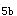
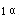

A.口测法适用于婴幼儿及神志不清者
B.腋测法测量体温时腋窝有汗液不必擦干
C.腋测法正常值为36~37℃
D.肛测法不用于小儿及神志不清者
E.肛测法较口测法低0.3~0.5℃
参考答案：C
A.12～16次／分
B.16～18次／分
C.12~18次／分
D.15～18次／分
E.15～20次／分
参考答案：B
A.测量时被测上肢裸露，肘部高于心脏水平
B.测量时听到的第一声响时汞柱数值为收缩压
C.测量时声音突然变小而低沉为舒张压
D.正常人下肢血压较上肢血压略有差异，可相差12~20mmHg
E.正常人下肢血压较上肢高10~20mmHg
A.60～100次／分
B.60~80次／分
C.60～72次／分
D.60～72次／分
E.80～90次／分
参考答案：A
A.5次／分
B.4次／分
C.10次／分
D.6次／分
E.2次／分
A.自主体位
B.被动体位
C.强迫仰卧位
D.强迫俯卧位
E.强迫坐位
A.面色苍白，颜面水肿
B.面容惊愕，眼裂增宽，目光闪亮
C.面色苍白，表情疲惫
D.面色灰褐，额部有褐色色素沉着
E.面容憔悴，目光暗淡
A.慌张步态
B.跨阈步态
C.醉酒步态
D.剪刀步态
E.蹒跚步态
A.强迫蹲位
B.强迫停立位
C.辗转体位
D.强迫仰卧位
E.坐位
A.前臂的屈侧或上臂背侧下1/3皮下脂肪的充盈程度
B.身高
C.体重
D.面部脂肪分布情况
E.腹部脂肪分布情况
A.面色灰暗，双颊发红，口唇发绀
B.面色苍白，表情疲惫
C.面色灰褐，额部有褐色色素沉着
D.面容惊愕，目光闪亮
E.表情淡漠，反应迟钝
B.强迫仰卧位
C.强迫坐位
D.强迫蹲位
E.辗转体位
A.20%
B.10%
C.15%
D.25%
E.30%
A.胃癌
B.食管癌
C.系统性红斑狼疮
D.血友病
E.肝癌
A.强迫仰卧位
B.强迫俯卧位
C.强迫侧卧位
D.强迫坐位
E.自动体位
A.指节律正常而强弱交替出现的脉率
B.指平静吸气时脉搏明显减弱甚至消失的现象
C.指脉搏骤起骤落
D.见于急性心肌梗死
E.见于甲状腺功能亢进
A.面色苍白，表情疲惫
B.面色苍白，颜面水肿，目光呆滞
A.多由某些内分泌疾病引起
B.表现为向心性肥胖
C.常有一定的遗传倾向
D.全身脂肪分布不均
E.青少年期没有生殖器发育迟缓
A.面颊、皮肤、上腭黏膜
B.手背皮肤及口腔黏膜
C.耳廓皮肤
D.颈部皮肤、舌面
E.睑结膜
参考答案：E
A.舌
B.唇
C.耳廓
D.肢端
E.腹部
A.手背或上臂内侧
B.躯干
C.眼睑部
D.腹部
E.胫前
A.斑疹
B.玫瑰疹
C.荨麻疹
D.斑丘疹
E.丘疹
A.胸腹部
B.面部
C.四肢
D.背部
E.生殖器
A.躯干
B.巩膜、软腭黏膜
C.手掌、脚掌
D.耳廓
E.四肢肢端
A.系统性红斑狼疮
B.淋巴瘤
C.丝虫病
D.恶性肿瘤淋巴结转移
E.白血病
参考答案：D
A.肿瘤性淋巴结肿大不属于慢性淋巴结肿大
B.系统性红斑狼疮属于慢性淋巴结肿大
C.淋巴结结核不属于慢性淋巴结肿大
D.艾滋病不属于慢性淋巴结肿大
E.药物热时淋巴结属于慢性淋巴结肿大
A.0.2～0.5cm
B.1.0～1.5cm
C.0.2～0.3cm
D.0.5～1.0cm
E.0.1～0.5cm
A.2型题
B.躯干下部
C.乳腺
D.胸壁
E.腹壁
A.手掌、足底、前额
B.巩膜
C.口腔黏膜
D.躯干
E.耳廓
A.颈前、颈后
B.锁骨上窝
C.枕后
D.腋下
E.腹股沟
A.可站在被检查者背后，手指紧贴检查部位
B.由浅入深滑动触诊
C.触诊时让被检查者头部稍高，或偏向检查侧的对侧
D.检查时注意淋巴结的部位、大小、硬度、压痛、活动度等
E.颈部检查完后，还要检查其他部位
A.强迫俯卧位
B.强迫侧卧位
E.强迫蹲位
A.<40cm
B.<45cm
C.<48cm
D.<53cm
E.53cm或以上
A.左眼上斜肌
B.右眼上斜肌
C.右眼下斜肌
D.左眼下直肌
E.右眼下直肌
A.小细胞均一性贫血
B.小细胞非均一性贫血
C.正常细胞均一性贫血
D.大细胞均一性贫血
E.大细胞非均一性贫血
A.再生障碍性贫血
B.急性淋巴细胞白血病
C.慢性淋巴细胞白血病
D.传染性单核细胞增多症
E.淋巴细胞型类白血病反应
A.类白血病反应
B.急性粒细胞白血病
C.再生障碍性贫血
D.应用肾上腺皮质激素
E.恶性淋巴瘤
A.中性粒细胞碱性磷酸酶(NAP)活性减低
B.α-醋酸萘酚酯酶染色阳性
C.糖原染色阳性
D.过氧化物酶染色(POX)阳性
E.苏丹黑B染色阳性
A.CD3
B.CD19
C.CD33
D.CD34
E.CD41
A.全能造血干细胞
B.B淋巴细胞系祖细胞
C.T淋巴细胞系祖细胞
D.髓系造血干细胞
E.粒-单核系祖细胞
A.AML-M
B.AML-M
C.AML-M
D.AML-ME
E.AML-M
A.红细胞表面有A抗原
B.白细胞表面有A抗原
C.血小板表面有A抗原
D.血清中有A抗原
E.血清中有抗A抗体
A.C
B.c
C.D
D.d
E.E
A.粒／红比例减低
B.淋巴细胞相对性减低
C.可出现中性粒细胞核左移
D.巨核细胞减少，治疗有效时恢复最快
E.穿刺部位为代偿性造血灶，则骨髓增生活跃，粒系增高
A.骨髓中粒细胞系增生，以原始粒细胞和早幼粒细胞为主
B.嗜碱性粒细胞增高
C.90%以上的病例可出现ph染色体
D.巨核细胞早期增多
E.大多数病例最终发展为急性粒细胞白血病
A.杜勒小体
B.染色质小体
C.棒状小体
D.Howell-Jolly小体
E.卡-波环
A.溶血性贫血
B.急性失血性贫血
C.慢性失血性贫血
D.再生障碍性贫血
E.缺铁性贫血
A.典型缺铁性贫血
B.缺铁性贫血治疗无效
C.缺铁性贫血治疗有效
D.轻型β-珠蛋白生成障碍性贫血
E.典型巨幼细胞贫血
B.溶血性贫血
C.急性白血病
D.慢性白血病
E.真性红细胞增多症
A.B-ALL
B.T-ALL
D.AM-M
E.AML-M
B.巨幼细胞贫血
C.缺铁性贫血
D.急性失血性贫血
E.慢性再生障碍性贫血
D.AML-M
A.MDS-RA
B.MDS-RAS
C.MDS-RAEB
D.MDS-CMML
E.MDS-RAEB-T
A.铁粒幼细胞贫血
C.巨幼细胞贫血
D.珠蛋白生成障碍性贫血
A.遗传性球形细胞增多症
B.丙酮酸激酶缺乏症
C.葡萄糖-6-磷酸脱氢酶缺乏症
D.阵发性睡眠性血红蛋白尿
E.自身免疫性溶血性贫血
A.肝素或类肝素物质
B.纤维蛋白降解产物
C.狼疮抗凝物
D.纤维蛋白原
E.抗心磷脂抗体
A.恶性肿瘤
B.肝脏疾病
C.肾脏疾病
D.DIC
E.外伤及外科手术后
A.凝血酶原时间
B.血小板计数
C.血浆FDP和D-D定量测定
D.纤维蛋白原定量
E.APTT
A.间接血凝试验
B.胶乳颗粒凝集试验
C.胶乳颗粒浊度免疫分析
D.胶体金免疫渗透试验
E.酶联免疫吸附试验
A.纤溶酶
B.纤溶酶原
C.纤维蛋白原
D.纤溶抑制物
E.组织纤溶酶原激活剂
A.vWF多聚体分析
B.血浆vWF抗原
C.血浆vWF活性
D.血浆FⅧ：C水平
E.vWF的胶原结合能力
A.全血阻抗法
B.光散射比浊法
C.微量反应板法
D.PRP透射比浊法
E.自发性聚集试验
A.APTT（活化部分凝血活酶时间）
B.ACT（活化凝血时间）
C.RT（复钙时间）
D.CT（凝血时间）
E.PT（凝血酶原时间）
A.FⅧ、FⅨ、FⅪ
B.FⅩⅢ、FⅫ、FⅪ
C.FⅡ、FⅤ、FⅢ(TT)
D.FⅤ、FⅦ、FⅧ
E.FⅡ、FⅤ、FⅦ
A.Ⅰ、Ⅱ、Ⅴ、Ⅶ、Ⅷ
B.Ⅰ、Ⅱ、Ⅴ、Ⅶ、Ⅸ
C.Ⅱ、Ⅱ、Ⅴ、Ⅶ、Ⅹ
D.Ⅰ、Ⅱ、Ⅴ、Ⅶ、Ⅺ
E.Ⅰ、Ⅱ、Ⅴ、Ⅶ、Ⅻ
A.血管壁功能异常均为获得性
B.血小板功能异常均为遗传性
C.获得性凝血因子缺乏常为单一凝血因子减少
D.遗传性凝血因子缺乏一般是多种凝血因子同时缺乏
E.先天性凝血因子缺乏症中的血友病A和血管性血友病最常见
A.FⅧ：C降低，vWF:Ag增高，vWF:Ag/Ⅷ：C比值增高
B.APTT、PT、TT均延长
C.AT、PC、纤溶酶原降低
D.血小板P-选择素增高和PAgT减低
E.3P试验阳性，FDP和D-D含量增高
A.血块收缩率<50%
B.血块收缩率为50%～70%
C.血块收缩率为70%~80%
D.血块收缩率为80%～90%
E.血块收缩率>80%
A.血小板数量
B.血小板膜磷脂的水平
C.血小板GPⅠb-Ⅸ复合物的活性
D.血小板GPⅡb／Ⅲa复合物活性
E.血小板的释放功能
A.糖尿病
B.口服避孕药物
C.高凝状态
D.血小板无力症
E.吸烟者
A.血小板无力症
B.巨血小板综合征
C.肝硬化
D.维生素B缺乏症
E.糖尿病
A.血栓前状态
B.糖尿病
C.心肌梗死
D.脑血栓形成
E.服用阿司匹林类药物
A.内皮细胞的功能状态
B.血小板活化状态
C.凝血因子的活化状态
D.纤溶系统的状态
E.抗凝系统的状态
A.TXB增高
B.TXB减低
C.6-酮-PGF水平增高
D.6-酮-PGF水平下降
E.TXB与6-酮-PGF比值增高
A.中性粒细胞和嗜酸性粒细胞增高
B.血小板计数及功能试验
C.尿液分析和血沉试验
D.IgG和IgA
E.小腿对称分布的紫癜伴游走性大关节肿痛
A.血小板减少和血小板生存时间缩短
B.发病机制可能与血小板抗体和细胞免疫有关
C.实验室检查示：血小板数减少伴PT、APTT异常
D.MAIPA试验也可阳性
E.骨髓涂片显示：巨核细胞增生伴成熟障碍
A.GPⅡb／Ⅲa复合物
B.β-TG和PF
C.血小板第3因子(PF)
D.GPⅠb／Ⅸ-Ⅴ复合物
E.P-选择素
A.血小板α颗粒成分缺陷
B.GPⅠb-/Ⅸ-Ⅴ的缺陷
C.血小板致密颗粒缺陷
D.P-选择素缺陷
E.GPⅡb／Ⅲa缺陷
A.血小板计数、凝血酶原时间、纤维蛋白原定量
B.活化部分凝血活酶时间、凝血酶原时间、凝血酶时间
C.血小板计数、出血时间、凝血时间
D.束臂试验、出血时间、血小板计数
E.凝血酶时间、纤维蛋白原定量、D-二聚体测定
A.PLT、BT和CT
B.PLT、PT和纤维蛋白原测定
C.TT、3P试验和血清FDP测定
D.优球蛋白溶解时间、3P试验和D-D测定
E.PLT、TT和D-D测定
A.BT延长
B.CT延长
C.PT延长
D.APTT延长
E.ELT延长
A.血友病时，APTT延长
B.严重肝病时，PT延长
C.晚期DIC时，3P试验阳性
D.特发性血小板减少性紫癜时PLT减少
E.血小板无力症时，BT延长
A.血小板减少性紫癜
B.血小板无力症
C.遗传性毛细血管扩张症
D.血友病A
E.血管性血友病
A.PAIgG、PAIgM、PAIgA均可增高
B.PAC也可增高
C.MAIPA是特异性试验
D.MAIPA是非特异性试验
E.需结合临床分析
B.多发性骨髓瘤
C.急性感染
D.原发性纤溶
E.急性心肌梗死
A.APTT异常，PT异常，提示共同凝血途径缺陷
B.APTT正常，PT异常，提示外源凝血途径缺陷
C.APTT、PT均正常，如FⅩⅢ定性试验阳性，提示FⅩⅢ缺陷
D.APTT异常，PT正常，提示内源凝血途径缺陷
E.APTT、PT均正常，肯定是正常人
A.血涂片上血小板分散不堆集
B.血小板聚集试验减低，但对瑞斯托霉素有反应
C.血块收缩不良
D.出血时间延长
E.单克隆抗体证实缺乏GPⅡb／Ⅲa
A.凝血酶时间测定是体外提供凝血酶试剂
B.纤维蛋白原的量或质有异常时可使TT延长
C.若循环抗凝血酶类物质存在，TT延长
D.甲苯胺蓝可中和肝素和肝素类抗凝物质
E.在TT延长的血浆中，加甲苯胺蓝后TT较前缩短3秒，提示该血浆中存在肝素或类肝素物质
A.急性白血病
B.再生障碍性贫血
C.急性溶血
E.肝硬化
A.血小板减少症
B.血栓性疾病
C.DIC
D.血管性血友病
E.遗传性毛细血管扩张症
A.凝血因子活性下降的判断
B.外科手术的出血筛选试验
C.抗血小板药物的监控
D.一期止血缺陷的筛检
E.诊断血管性血友病
B.血小板增多症
C.血小板无力症
D.低纤维蛋白原血症
E.血栓性疾病
A.血管性血友病
B.肝硬化
C.巨大血小板综合征
D.骨髓增生性疾病
A.口服避孕药
B.心肌梗死
C.糖尿病
D.高β-脂蛋白血症
E.无纤维蛋白原血症
A.巨血小板综合征
C.急性心肌梗死
D.脑血栓
E.自身免疫性疾病
A.PAgT
B.vWF:Ag
C.6-酮-PGF
D.TM
E.可溶性细胞间黏附分子
A.SLE
B.Evans综合征
D.高血压
E.恶性淋巴瘤化疗后
A.多次检查血小板计数减少
B.脾不肿大或轻度肿大
C.骨髓检查巨核细胞数增多或正常，有成熟障碍
D.PAIg增多
E.对糖皮质激素治疗无效
A.ELT缩短
B.PAgT聚集率增高
C.tPA含量增高
D.FDP增高
E.D-二聚体阳性
A.血小板聚集率减低
B.病理性凝血酶生成
C.纤维蛋白在微血管内沉积
D.微血栓形成
E.原发性纤溶亢进
微信关注